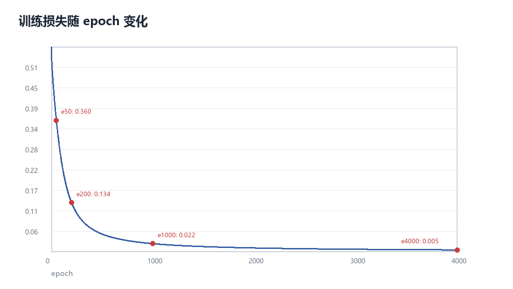
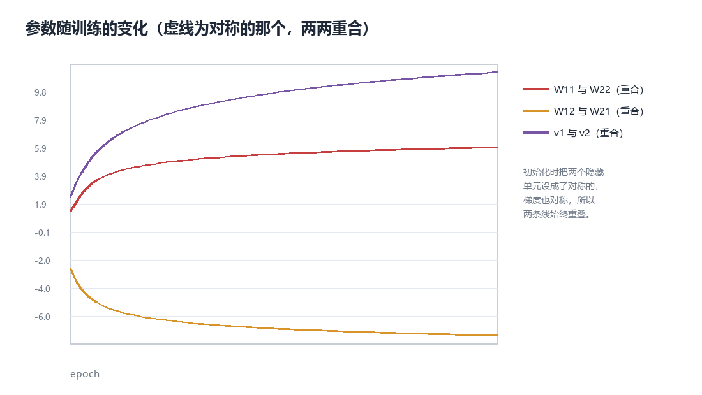
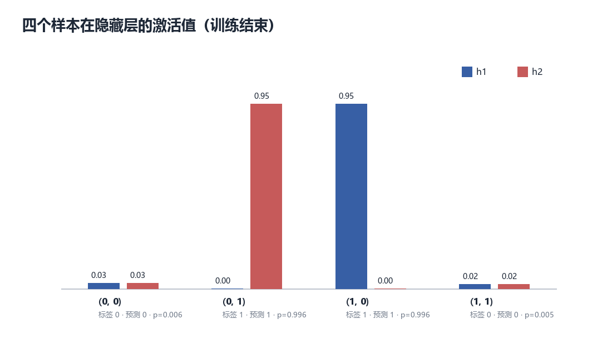

MLP 学习参数的实现与可视化
从零手写一个 2-2-1 的多层感知机，训练它解决 XOR 问题， 并把权重、偏置、损失和决策边界的变化画出来。
这份作业没有调用任何深度学习框架：前向传播、损失、反向传播、参数更新 全部用 NumPy 写成。训练对象是经典的 XOR 四样本问题——它线性不可分， 必须靠隐藏层才能解决，正好用来观察“参数是怎么被学出来的”。
一、网络结构
输入两个数 x₁, x₂，隐藏层两个 sigmoid 神经元 h₁, h₂，输出一个 sigmoid 神经元 p， 表示“判为 1”的概率。整张网络一共 9 个可学习参数。
| 参数 | 形状 | 含义 |
|---|---|---|
W | 2 × 2 | 输入层到隐藏层的连接权重 |
b1 | 1 × 2 | 隐藏层偏置 |
v | 2 × 1 | 隐藏层到输出层的权重 |
b2 | 1 × 1 | 输出层偏置 |
二、损失与反向传播
目标值 t ∈ {0,1}，用二元交叉熵损失：
对输出层求导得误差项，再经 v 传回隐藏层， 乘上 sigmoid 的导数 h(1−h)，就得到每个参数的梯度：
δ₁ = (δ₂vᵀ) ⊙ h(1−h) dW = xᵀδ₁ db₁ = Σδ₁
参数按 θ ← θ − lr·∇θ 更新，学习率 0.5，全批量梯度下降，跑 4000 轮。
三、训练结果
损失曲线
前 200 轮掉得最快，1000 轮之后基本贴着零线走。 这是全批量梯度下降的典型形状：先陡后平，不会来回震荡。

决策边界
把输入平面离散成 40×40 的网格，逐点送入网络，画出概率热力图。 第 0 轮时只有一条斜线，几乎没学到东西；第 50 轮开始出现两条相反的斜边； 到第 1000 轮，中间被压成一条对角线，四个角正确分到红蓝两侧。

参数轨迹
训练结束时 W = [[6.51, −6.77], [−6.77, 6.51]]，
v = [[11.81], [11.81]]。绝对值都在变大，说明网络在把决策边界“推陡”，
让 sigmoid 从模糊的过渡带变成近似阶跃。
图上只有三条线，因为初始化时两个隐藏单元被设成了完全对称，
梯度也始终对称：W11 = W22、W12 = W21、v1 = v2。
这是这套初始化能收敛的原因，也是它的局限——两个隐藏单元在学同一个特征。

隐藏层激活
四个样本在隐藏层的激活值差异很大，正是这个差异让输出层能把 XOR 分开： 每个隐藏单元各管一条斜边，输出的线性组合就拼出了“异或”的形状。

四、关键代码
前向传播和损失：
# 前向：隐藏层与输出层都用 sigmoid
h = sigmoid(X @ W + b1)
p = sigmoid(h @ v + b2)
loss = -np.mean(T * np.log(p + 1e-12) + (1 - T) * np.log(1 - p + 1e-12))
手写反向传播：
# 输出层误差 → 梯度 dz2 = (p - T) / len(X) dv = h.T @ dz2 db2 = dz2.sum(axis=0, keepdims=True) # 误差回传到隐藏层，乘 sigmoid 导数 dh = dz2 @ v.T dz1 = dh * h * (1 - h) dW = X.T @ dz1 db1 = dz1.sum(axis=0, keepdims=True) # 梯度下降 W -= LR * dW b1 -= LR * db1 v -= LR * dv b2 -= LR * db2
五、如何复现
python train_mlp.py # 训练，输出 mlp_data.json python render_figs.py # 由 JSON 生成四张图 python -m http.server 8000 # 本地预览本页
训练脚本只用 NumPy；作图用 Pillow，没有 matplotlib 依赖。 原始训练数据（每轮损失、五个时刻的权重与网格概率）在 mlp_data.json 里，可另行分析。
六、观察到的问题
一是上面说的对称性：两个隐藏单元始终学同一个东西，相当于只有 1 个有效隐藏单元。 换成随机初始化，两条线会分开，决策边界的形状也会略有不同。
二是输出层权重涨到 11 以上之后，sigmoid 已经接近饱和，梯度变得很小， 训练后期几乎不再变化。想继续压低损失，得换更平缓的激活函数或者加正则， 而不是一味增加 epoch。